In the Swiss canton of St. Gallen, near the northern banks of Lake Zurich, stands a small village named Bollingen.
In 1922, the psychiatrist Carl Jung chose this spot to build a retreat.
He began with a primitive two-story stone house he called the Tower.
There was no electricity and no telephone. He chopped wood for heat and pumped water from a well. It wasn't a vacation home. Jung built the Tower because he had a problem.
He had split from his mentor, Sigmund Freud, and needed to establish his own school of analytical psychology.
To do so, he needed to produce a stream of original work.
He needed to think thoughts that had never been thought before.
Jung realized that his busy clinical practice and the coffeehouse culture of Zurich were enemies of this goal. To change the world, he needed a place where he could lock the door and dive into the absolute limits of his cognitive ability.
He needed the Tower.
Most of us don't have a stone tower in Switzerland. Instead, we have open offices, Slack notifications, and a culture that equates immediate responsiveness with productivity.
We are drowning in the shallows, spending our days frantically moving information around.
This matters because the economy is shifting.
We are moving from an industrial age to an information age where the ability to focus without distraction is becoming the decisive competitive advantage.
This longform argues that focus is not just a nice-to-have habit for monks and writers. It is the superpower of the 21st century.
What follows is a practical framework for reclaiming that superpower.
By the end, you will discover:
- Why the economy is splitting into winners and losers, and what single skill determines which side you're on.
- The biological reason intense focus literally rewires your brain for mastery.
- Why some people need a stone tower in Switzerland while others can focus at a loud party.
- How embracing boredom trains your concentration like a muscle.
- Why quitting social media might be the highest-leverage decision you make this year.
- Why scheduling every minute of your day actually gives you more freedom.
The 1-Minute Summary The economy is bifurcating. Intelligent machines and global labor markets are eliminating average jobs. Three groups will thrive: those who can work with complex machines, those who are the best at what they do, and those with capital. The first two require a single core skill.
Deep Work: Professional activities performed in distraction-free concentration that push your cognitive abilities to their limit. Deep work creates new value, improves your skills, and is hard to replicate.
Its opposite, Shallow Work, is the logistical busywork that fills most days: emails, meetings, Slack. It feels productive but produces little of lasting value.
The Deep Work Hypothesis: The ability to perform deep work is becoming rare at the exact moment it is becoming valuable. The few who cultivate it will thrive. The rest will be left behind.
Four rules to get there: 1. Work Deeply. Build rituals and routines that protect your focus. 2. Embrace Boredom. Train your brain to resist the craving for distraction. 3. Quit Social Media. Apply the craftsman's standard to your tools. 4. Drain the Shallows. Schedule every minute. Ruthlessly minimize low-value work.
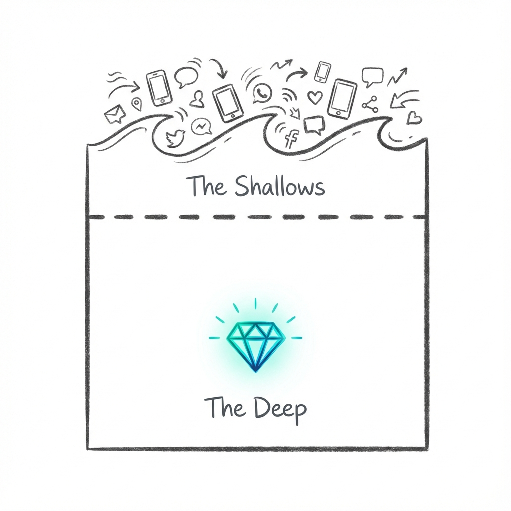
If this breakdown resonates, explore more at longform.online
Module 1: The Economic & Cognitive Necessity
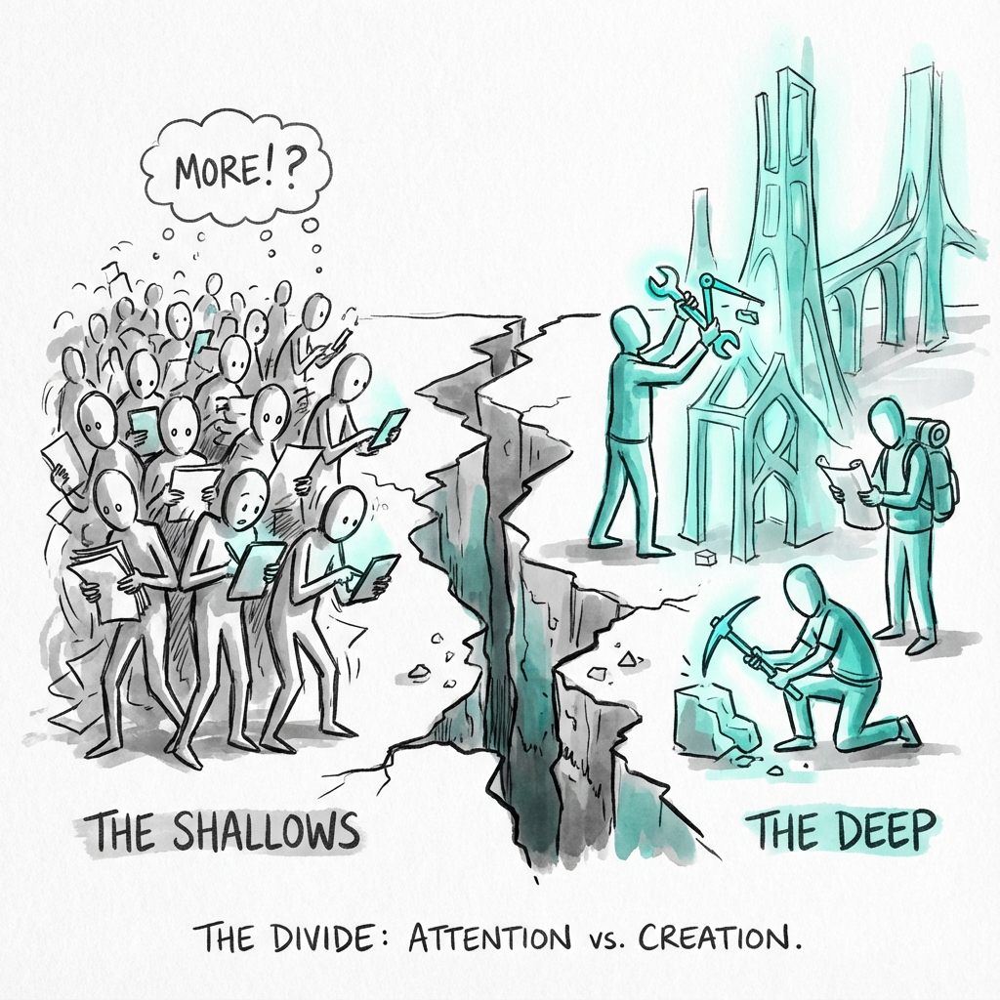
If you look at the current economic landscape, you might feel a sense of unease.
The rise of automation and the ability to outsource work to anywhere on the globe creates a terrifying question: Is my job safe?
Most jobs aren't.
Standard economic thinking argues that we are in the Great Restructuring. As technology races ahead, it widens the gap between the skilled and the unskilled.
However, this isn't universally grim. There are three specific groups that will not just survive this shift, but claim a disproportionate amount of the rewards.
1. The Three Winners
To understand why deep work is a necessity, you simply need to look at who is winning.
-
The High-Skilled Workers: These are the people who can work creatively with intelligent machines. Think of Nate Silver, the data analyst who feeds massive databases into complex statistical software to predict elections. He isn't replaced by the computer. He is the only one who knows how to ask the computer the right questions. To join this group, you must be able to master complex systems quickly.
-
The Superstars: In the past, if you were the best programmer in your town, you had job security. Today, remote work and digital collaboration mean a company in Omaha can hire a programmer in Bangalore or San Francisco. The talent market is now a winner-take-all market. If you are the best in your field, your reachable audience and potential earnings are limitless. If you are mediocre, you are in trouble. To become a superstar, you must produce at an elite level.
-
The Owners: These are the people with capital to invest in the new technologies. This group is largely inaccessible to most people without existing fortunes, so we will focus on the first two.
The path to joining the High-Skilled or the Superstars relies on two core abilities: the ability to quickly master hard things and the ability to produce at an elite level, in terms of both quality and speed.
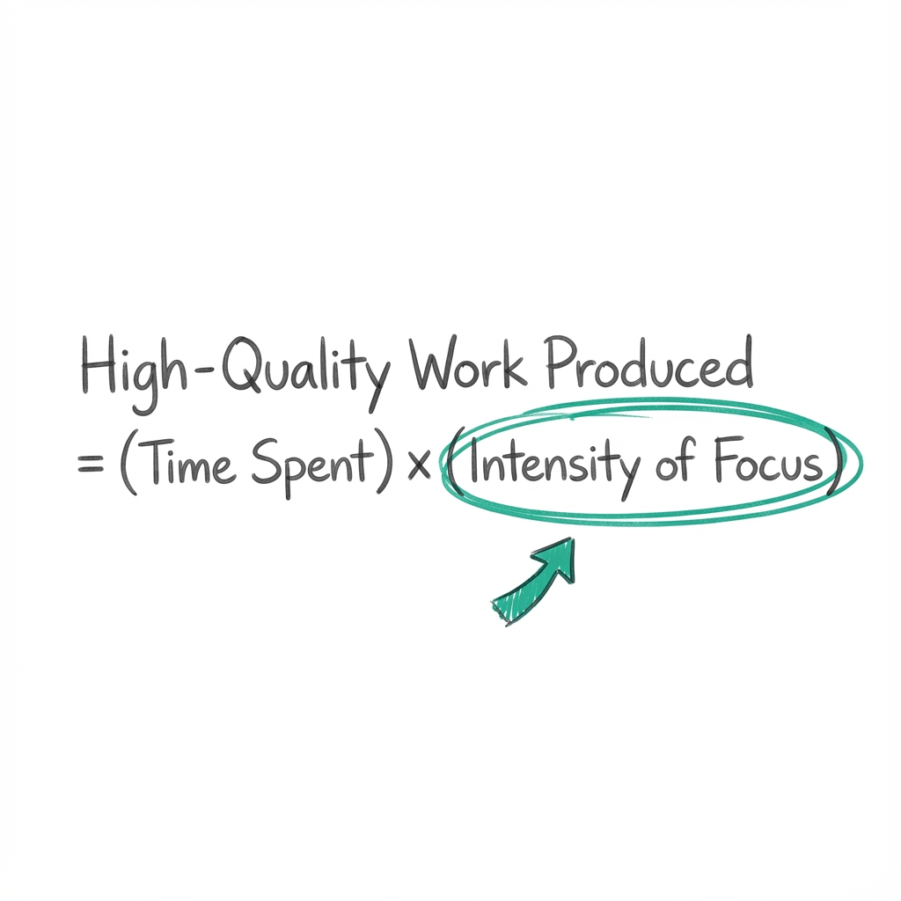
Both of these abilities depend entirely on your capacity for deep work.
2. The Science of Learning
Why is depth required to learn hard things?
The answer lies in your brain's biology.
To understand mastery, we look to the work of K. Anders Ericsson, the psychologist who coined the term deliberate practice.
Ericsson argues that what separates experts from the rest is not talent, but a specific type of intense practice where you focus tightly on a skill you’re trying to improve, receive feedback, and correct your approach.
Diffused attention is the enemy of deliberate practice.
You cannot learn a complex new coding language or a difficult medical procedure while checking your email every ten minutes.
Neuroscience provides the physical explanation for this.
When you learn a skill, you are firing a specific neural circuit in your brain. To get better, you need to wrap that circuit in a fatty substance called myelin.
Myelin acts like insulation on an electrical wire. It allows the signal to travel faster and cleaner.
Here is the key: You trigger the production of myelin by firing the relevant circuit repeatedly and intensely in isolation. To learn hard things quickly, you must be able to focus intensely without distraction.
To learn is an act of deep work.
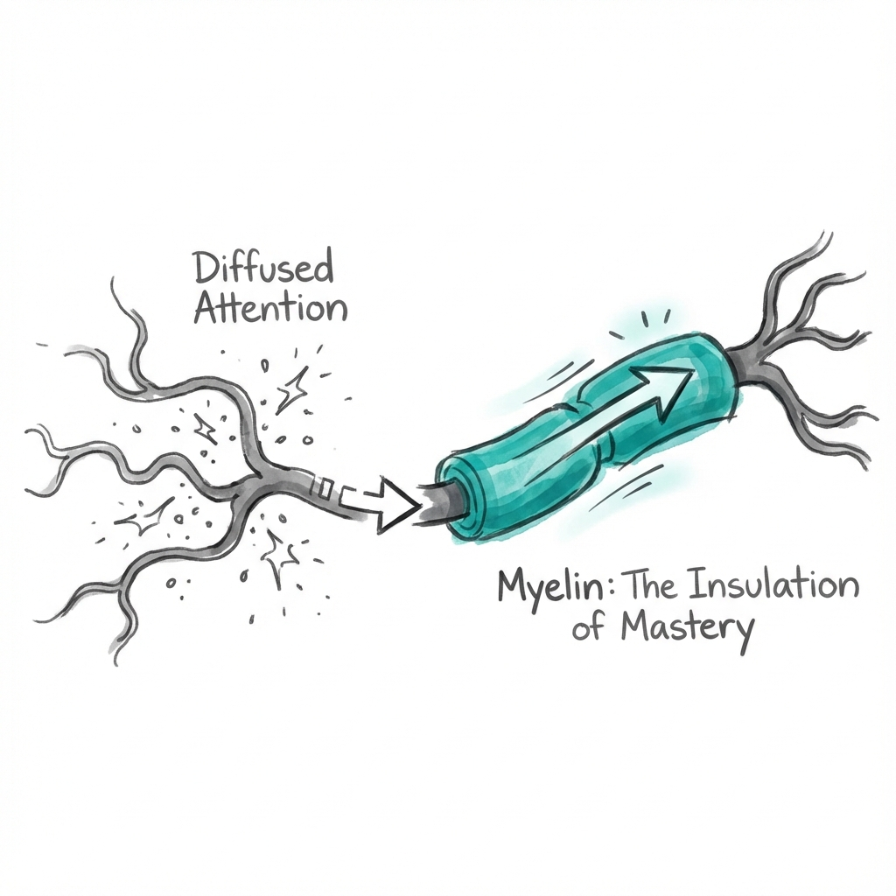
3. The Metric Black Hole
If deep work is so valuable, why don't we see more of it?
Why do modern offices prioritize open floor plans, instant messaging, and constant connectivity?
The answer lies in the Metric Black Hole.
In an industrial economy, productivity was easy to measure: How many widgets did you crank out in an hour?
In a knowledge economy, it is incredibly difficult to measure the value of an individual employee's day.
If you respond to 50 emails, are you productive? It’s hard to say.
In the absence of clear metrics, organizations default to the easiest proxy for productivity.
Busyness.
We fall into a trap where we believe that doing lots of stuff in a visible manner is the same as being productive.
We send emails at all hours, attend endless meetings, and reply to Slack messages within seconds to prove we are working.
We prioritize the Principle of Least Resistance, doing what is easiest in the moment (answering an email) rather than what is hard (planning a new business strategy).
This culture of connectivity is destroying our ability to go deep, yet it persists because the cost of this distraction is invisible.
We don't see the brilliant ideas that weren't produced because the creator was too busy replying to emails.
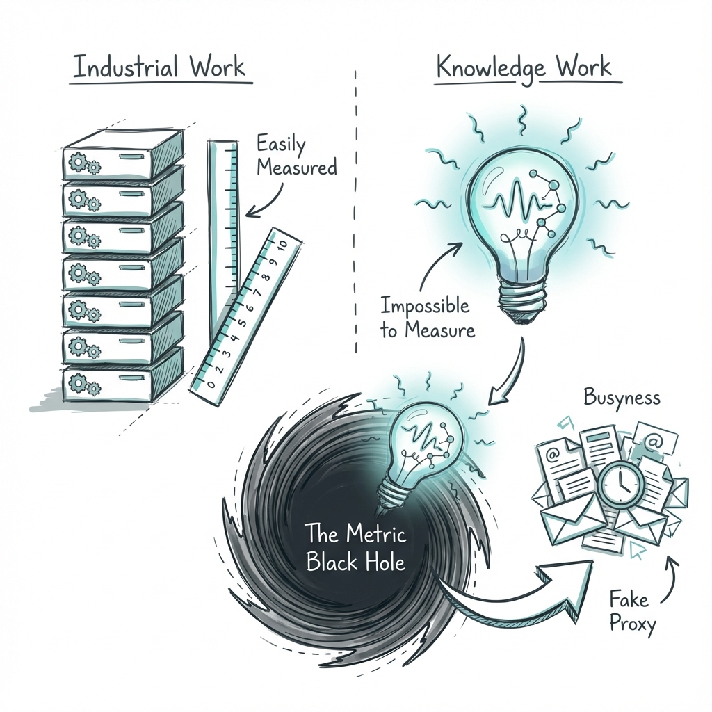
The business world is slowly waking up to this, but you cannot wait for your boss to build you a Bollingen Tower.
You must recognize that the distracted nature of modern work is a market inefficiency. If you can cultivate the ability to go deep while everyone else is skimming the surface, you will possess a scarce and powerful asset.
Module 2: The Meaning of Depth
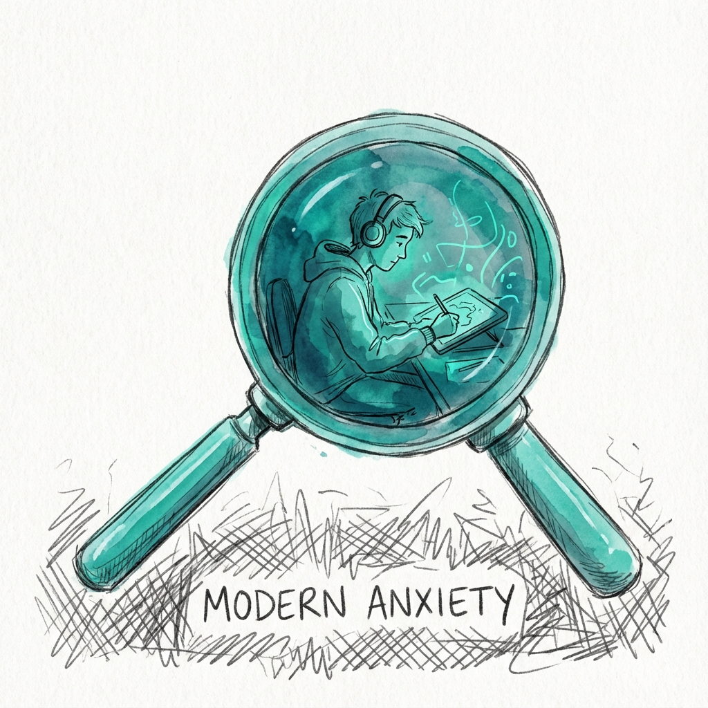
It is easy to look at the life of a craftsman and see the inherent meaning in their labor. A master blacksmith or a woodworker takes raw material and transforms it into something beautiful.
There is a visible connection between their effort and the outcome.
In knowledge work, this connection is often severed.
When your day consists of shifting digital bits from one screen to another, it can feel like you are doing a lot of stuff without doing anything that actually matters. This ambiguity leads to a sense of nihilism and burnout. But as it turns out, the dissatisfaction we feel isn't caused by our work itself. It is caused by the shallow way we approach it.
To understand why depth is the antidote to this malaise, we have to look at how focus affects our subjective experience of reality.
1. The Neurological Case for Focus
The science writer Winifred Gallagher discovered a profound truth about the mind while battling an advanced cancer diagnosis.
She realized that the disease wanted to monopolize her attention, but she made a conscious choice to focus on what was still good in her life: walks, movies, and a nightly martini.
To her surprise, she found that her life during this period was pleasant.
This led her to a grand unified theory of the mind: Who you are, what you think, feel, and do is the sum of what you focus on.
Our brains don't just perceive the world. They construct it based on where we point our attention.
If you spend your day in a state of fragmented distraction, responding to minor crises and scrolling through social feeds, your brain will construct a reality that is trivial and stressful.
If you instead spend long stretches in rapt attention on a difficult, important task, your brain perceives your world as rich with meaning.
Depth isn't just a way to get work done.
It is a neurological reset button that filters out the background hum of modern anxiety.
2. The Flow State
This neurological reality is complemented by the work of the psychologist Mihaly Csikszentmihalyi, who spent decades studying what makes people happy.
Through his research, he identified a state he called flow.
Flow is the mental state where you are so immersed in a challenging task that you lose track of time and your sense of self.
We often think that we want more relaxation and less work, but Csikszentmihalyi discovered a paradox.
People are actually happier at work and less happy relaxing than they realize.
Leisure time is often unstructured and requires a lot of effort to turn into something enjoyable.
Work, by contrast, has built-in goals, feedback, and challenges.
Deep work is a flow activity par excellence.
When you stretch your mind to its limits to solve a problem or create something new, the act itself is rewarding, regardless of the outcome.
A deep life is a happy life because it is a life filled with flow.
3. Craftsmanship in the Digital Age
There is a final, philosophical reason why depth provides meaning.
In our post-Enlightenment world, we often believe that meaning is something we create or invent for ourselves.
This puts a heavy burden on the individual.
If we can't find a passion, we feel our lives are meaningless.
The philosophers Hubert Dreyfus and Sean Dorrance Kelly suggest a different path through the example of the traditional craftsman.
A wheelwright doesn't invent the meaning of the wood he works with. He discovers the subtle virtues inherent in the material. His job is to cultivate the skill required to let those virtues shine.
This same mindset can be applied to knowledge work.
You don't need a rarified job at a nonprofit to find meaning.
You need a rarified approach to your craft.
Whether you are writing code, a legal brief, or a marketing plan, there is a level of excellence that can be reached only through intense focus.
When you commit to a craftsmanship mindset, you move away from the nihilism of just getting things done and toward the satisfaction of mastery.
The look of satisfaction on a blacksmith's face as he pulls a blade from the fire isn't reserved for those who work with their hands.
It is available to anyone willing to trade the shallow for the deep.
Module 3: Structuring the Deep Life
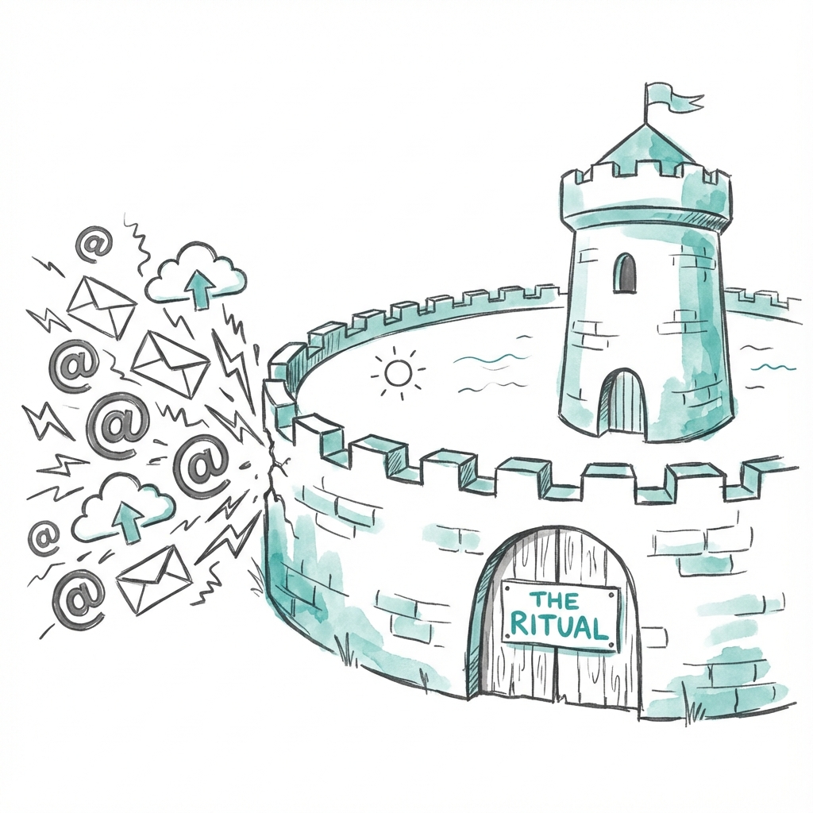
Transitioning into a life of depth is not a matter of willpower.Research by the psychologist Roy Baumeister has famously established that willpower is a finite resource.
It is like a muscle that tires over the course of the day.
If you rely solely on your grit to resist the siren call of your inbox while trying to focus on a hard problem, you will eventually fail.
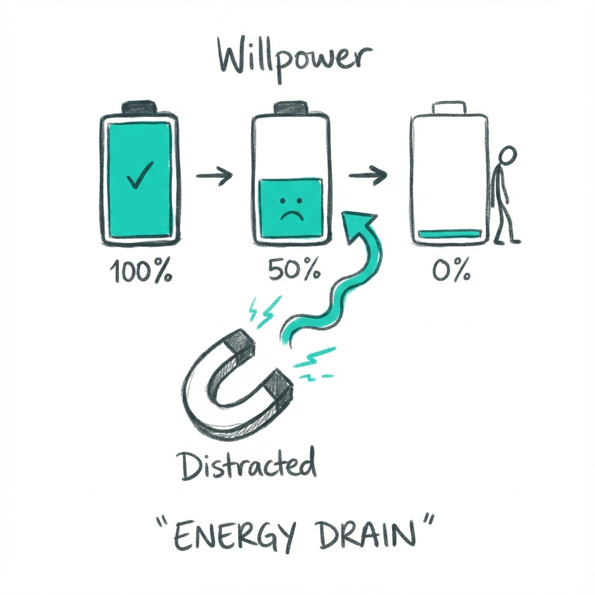
The goal of Rule #1 is to build routines and rituals that minimize the amount of willpower required to enter and stay in a state of depth.To do this, you must first choose a philosophy that fits your specific life and career.
1. The Four Scheduling Philosophies
There is no single correct way to schedule deep work.
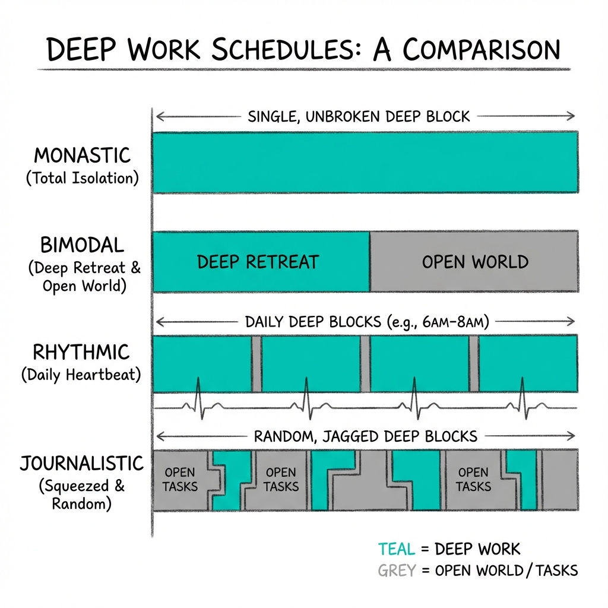
Newport identifies four distinct approaches, ranging from the radical to the pragmatic.
-
The Monastic Philosophy: This approach maximizes depth by eliminating or radically minimizing all shallow obligations. Think of the computer scientist Donald Knuth, who famously has no email address. He lives a life dedicated entirely to being at the bottom of things. This is a rare path, suitable only for those whose primary value is a single, discrete output (like a book or a theorem).
-
The Bimodal Philosophy: This involves dividing your time into clearly defined stretches of depth and openness. You might spend four days a week in a monastic state at a retreat and the rest of the week in a shallow state in the city. This allows for intense focus while still fulfilling the collaborative requirements of a modern career.
-
The Rhythmic Philosophy: This is the most common approach for people with standard office jobs. It relies on the power of habit, scheduling deep work at the same time every single day. By creating a rhythm, you remove the friction of deciding when to work. Like Jerry Seinfeld’s chain method of writing jokes every day, the goal is simply to not break the habit.
-
The Journalistic Philosophy: This is for the black belts of concentration. It involves shifting into a deep state at a moment’s notice whenever a free window of time opens up. Walter Isaacson, for instance, could retreat into a bedroom for twenty minutes of a party to hammer out a few paragraphs of a biography. This requires an incredible ability to switch mental gears, which takes years of practice to master.
2. The Power of Ritual
To make these philosophies work, you must wrap your sessions in rituals.
A ritual signals to your brain that it is time to move from the shallow to the deep.
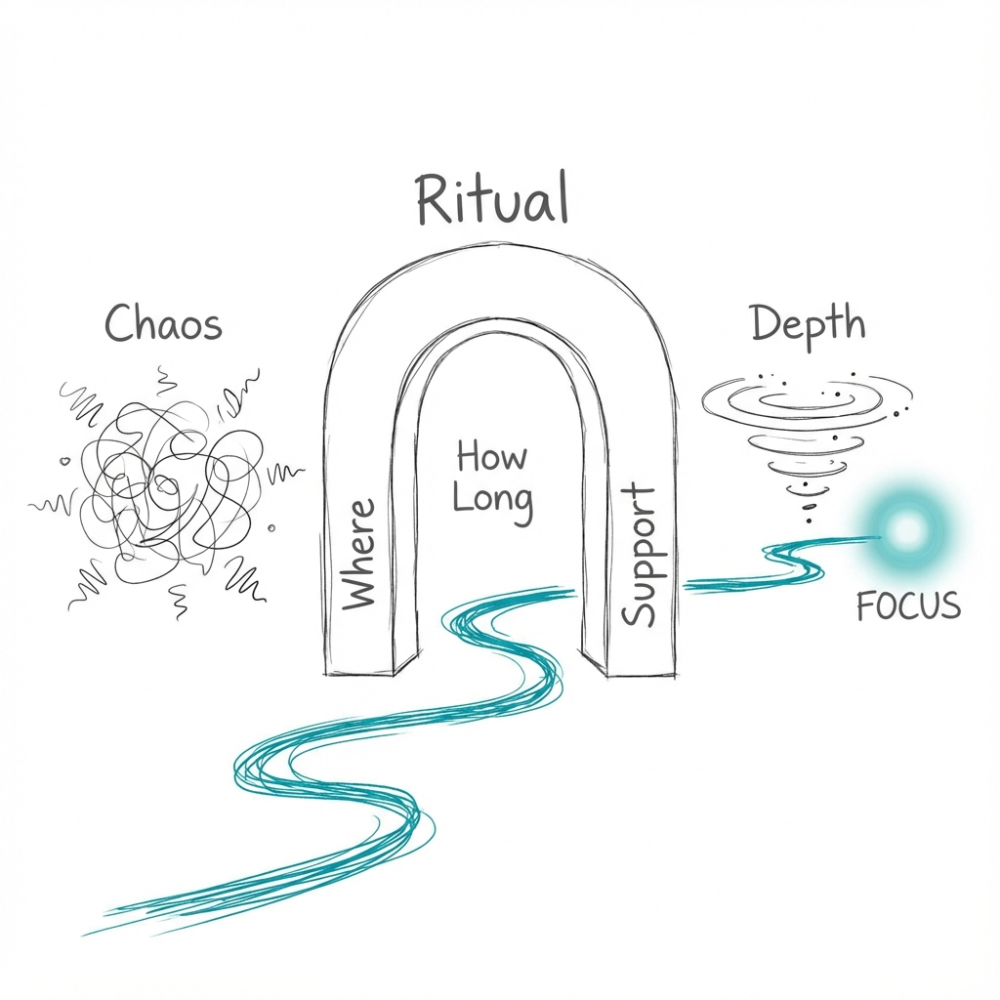
You need to define three things for every session:- Where you’ll work: Identify a location dedicated only to depth, whether it’s a specific library carrel or your home office with the door locked and phone off.
- How long you’ll work: Set a clear endpoint. Having a "ticking clock" creates a sense of urgency that sharpens focus.
- How you’ll support the work: Ensure you have the necessary materials, coffee, or light food ready so you don’t have to break your concentration to hunt for a snack or a charger.
3. The Grand Gesture
Sometimes, the best way to ignite deep work is to make a grand gesture.
This involves a radical change in environment or a significant investment of money to signal the importance of the task to your brain.
J.K. Rowling, struggling to finish the final Harry Potter book, checked into a suite at the five-star Balmoral Hotel in Edinburgh.
The cost and the change of scenery provided the psychological pressure she needed to close out the series.
By going big, you tell your subconscious that the task at hand is too important to be ignored.
4. The Shutdown Ritual
Perhaps the most counterintuitive part of working deeply is knowing when to stop.
At the end of the workday, you must perform a strict shutdown ritual.
This ritual involves checking your email one last time, reviewing your task list to ensure everything is captured, and making a plan for the next day.
Once you finish, you should say a set phrase (Newport uses "Shutdown complete") and then actually stop working.
No checking email at dinner. No quick glances at Slack.
This is necessary because of the Zeigarnik effect, the tendency of our brains to keep open loops (unfinished tasks) at the front of our awareness.
By making a plan for the unfinished work, you allow your brain to release the stress and fully recharge.
True downtime is not an indulgence. It is the fuel that makes the next day’s depth possible.
Module 4: Training for Intensity
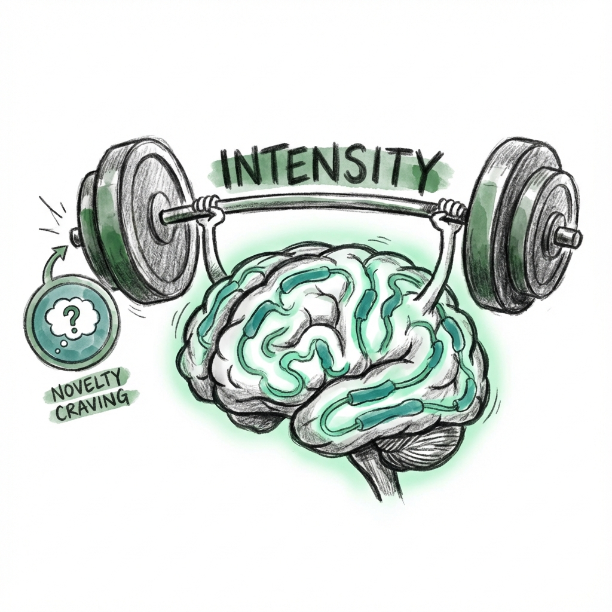
Most people believe they can spend their days in a blur of digital distraction and then, when the time comes to do something important, simply flip a switch and focus.This is a mistake.
As the late Stanford professor Clifford Nass discovered through his research, the mentally wrecked brains of chronic multitaskers cannot simply filter out irrelevancy.
Once your brain is wired for on-demand distraction, it craves it even when you want to be laser-focused.
Concentration is a skill that must be trained.
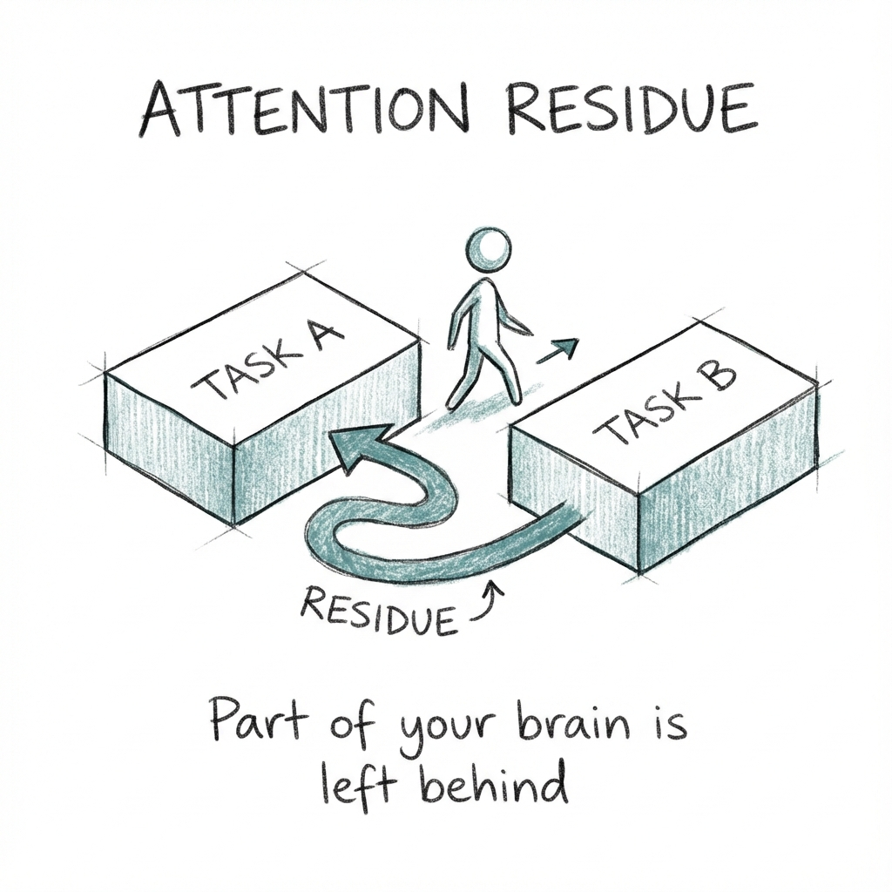
It is like a muscle that atrophies without use.
To strengthen this muscle, you must do two things: improve your ability to focus intensely and, more importantly, overcome your desire for distraction.
1. Don’t Take Breaks from Distraction
The most popular advice for the distraction problem is the Internet Sabbath: putting aside one day a week to stay offline.
This is well-intentioned but ineffective.
If you eat healthy only one day a week, you won't lose weight. Similarly, if you spend most of your time giving in to every digital craving, a single day of detox won't rewire your brain.
The real problem is the constant switching from low-value tasks to high-stimuli distractions at the slightest hint of boredom.
To fix this, you should flip the script.
Instead of scheduling breaks from distraction, you must schedule breaks from focus.
Identify specific Internet blocks in your day. Outside of these blocks, network connectivity is absolutely forbidden.
If you are standing in a long line at the grocery store, do not reach for your phone. Sit with the boredom.
Every time you resist the urge to seek novelty, you are performing a mental push-up that strengthens your attention-selecting muscles.
2. Work Like Teddy Roosevelt
Theodore Roosevelt was a man of amazing array of interests.
At Harvard, he boxed, wrestled, danced, and was a world-class naturalist. He also earned honor grades in his classes.
His secret was a blistering intensity of focus.
He would block out a sliver of time for his studies, far less than his peers, and then attack the work with such ferocity that he could afford to spend the rest of his day on his hobbies.
You can replicate this with Roosevelt Dashes.
Identify a deep task and give yourself a hard deadline that is right at the edge of what is possible.
Use a countdown timer if necessary.
The only way to beat the clock is to work with total, teeth-gritting concentration.
This type of interval training for your brain pushes your capacity for depth to new levels.
3. Productive Meditation
One of the most effective ways to train your mind is to practice productive meditation.
This involves taking a period where you are physically occupied but mentally free (walking, jogging, or driving) and focusing your attention on a single, well-defined professional problem.
This is harder than it sounds.
Your mind will naturally try to loop over what it already knows or drift toward more pleasant thoughts.
When this happens, gently redirect your attention back to the problem.
To succeed, you must structure your thinking:
- Store the variables: Identify the key facts or components of the problem.
- Define the next-step question: Focus on the specific piece you need to solve next.
- Consolidate your gains: Once you find a solution, review it clearly before moving on.
Through these practices, you move from someone who is at the mercy of their impulses to someone who owns their attention.
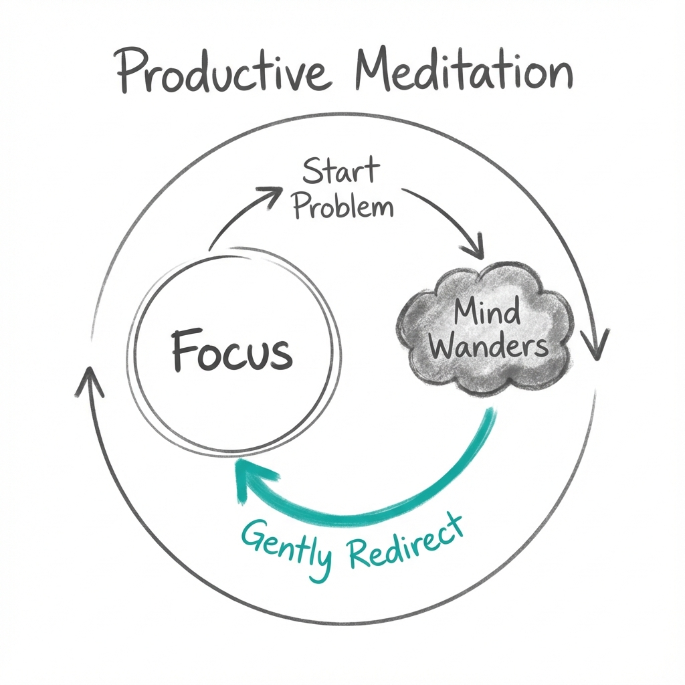
You become a person who can sit with a difficult problem until it gives way under the weight of your unwavering focus.
Module 5: Digital Minimalism
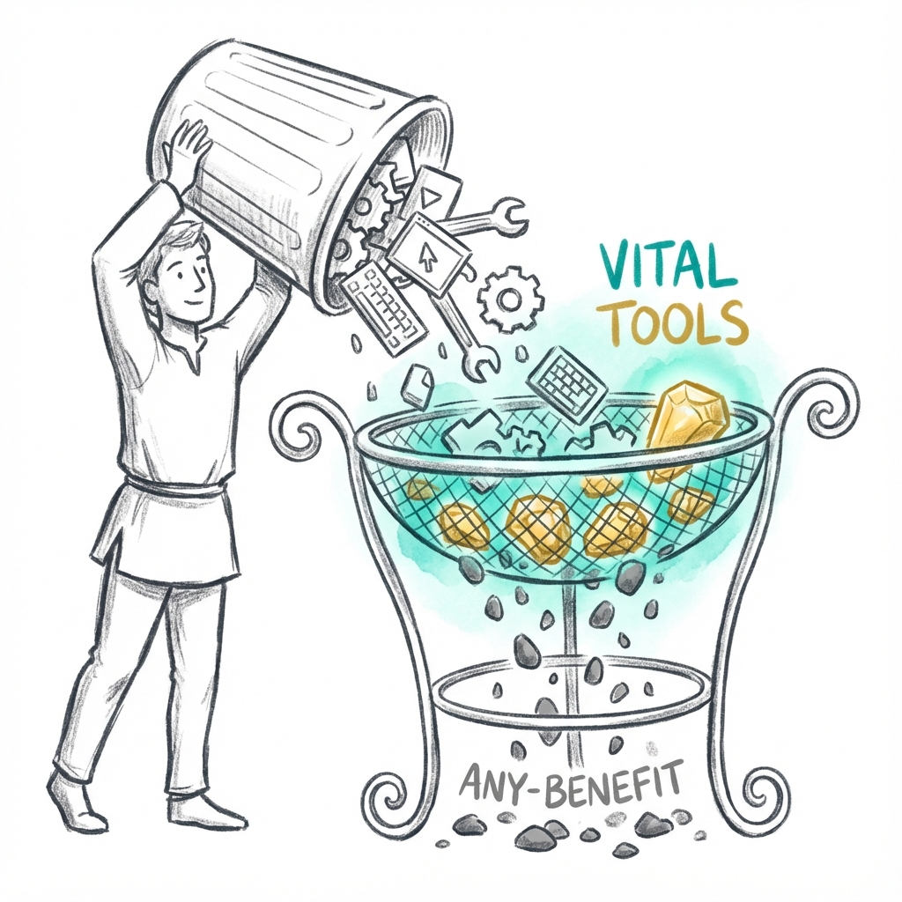
We live in a culture that has adopted a strangely simplistic view of technology.We have fallen into the any-benefit mindset, which suggests that you are justified in using a network tool if you can identify any possible benefit to its use, or anything you might miss out on if you don't use it.
From this perspective, Instagram is a must-have because you might see a photo of a high school friend's baby. X is essential because you might miss a breaking news story. LinkedIn is a must-have because you might miss a job opportunity.
But for someone whose livelihood depends on the ability to produce valuable things, this logic is a trap.
It ignores the massive opportunity cost of the time and attention these tools consume.
To reclaim your focus, you must transition from a consumer of digital distractions to a craftsman of your own attention.
1. The Craftsman Approach to Tool Selection
Consider the case of Forrest Pritchard, a sustainable farmer.
When he decided whether to keep a piece of equipment like a hay baler, he didn't just ask if it was useful.
Every tool in a farm supply store is useful.
Instead, he looked at his core goals (in his case, the long-term fertility of his soil) and asked if the tool substantially contributed to those goals more than it hindered them.
He realized that while the baler made hay, the heavy machinery compacted his soil and took away time he could spend raising chickens. He sold the baler.
This is the craftsman approach to tool selection.
Adopt a tool only if its positive impacts on the core factors that determine success and happiness in your life substantially outweigh its negative impacts.
To apply this, you must first identify your main professional and personal goals.
Then, list the two or three most important activities that help you reach those goals.
Only then do you look at tools like Instagram, X or LinkedIn. If a tool doesn't have a massive, positive impact on those specific activities, it doesn't belong in your life.
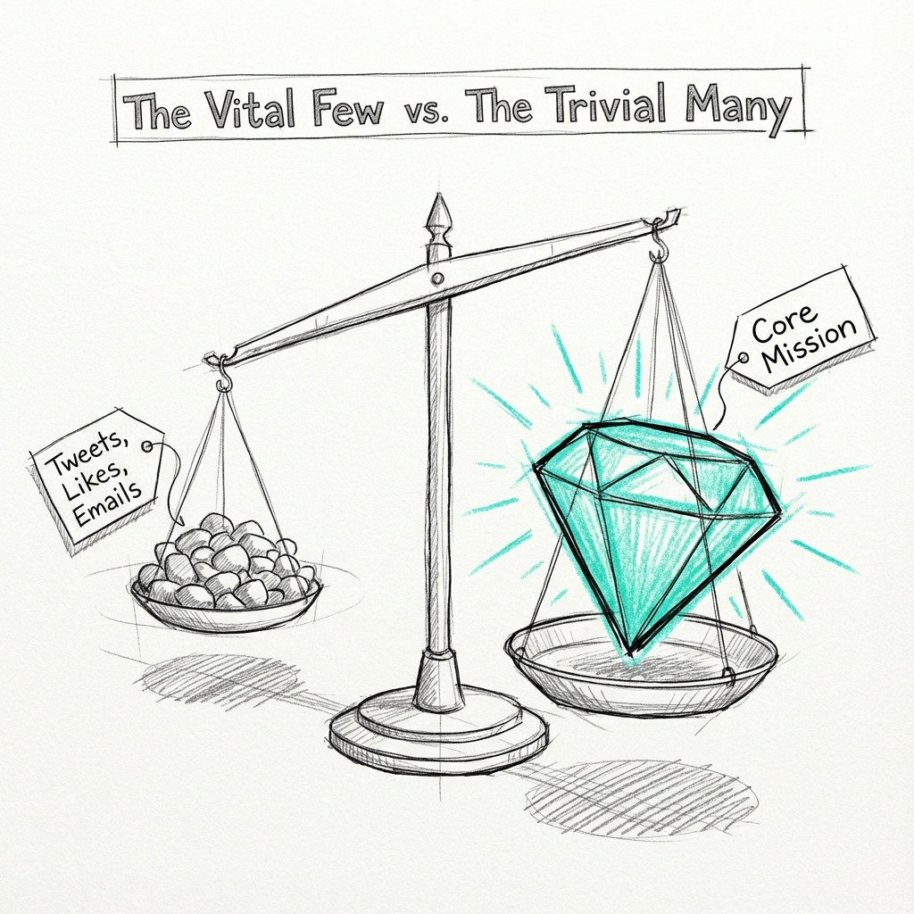
2. The Law of the Vital Few
Why be so selective?
Because of the Law of the Vital Few, often known as the 80/20 rule.
In almost any endeavor, 80 percent of the results come from just 20 percent of the activities.
If your goal is to be a world-class writer, the 20 percent of activities that matter are deep research and focused writing.
Spending hours engaging with fans on social media might provide a minor benefit, but it is a low-impact activity.
Every hour you spend on low-impact any-benefit activities is an hour stolen from the high-impact work that actually moves the needle on your career.
You aren't missing out by quitting social media. You are gaining the ability to invest your limited resources where they return the most value.
3. The 30-Day Experiment
If the idea of quitting social media feels terrifying, it's likely because you've been conditioned to believe you are more important to the digital world than you actually are.
We often stay on these platforms because of a shallow collectivist agreement:
I’ll pay attention to what you say if you pay attention to what I say.
It gives us a simulacrum of importance without requiring the hard work of actually producing value.
To break this spell, perform a packing party for your digital life.
Stop using all social media for thirty days. Don't deactivate your accounts and, crucially, don't announce that you're leaving.
Just vanish.
After the month is up, ask yourself two questions: 1. Was my life notably better without this service? 2. Did anyone actually care that I was gone?
For the vast majority of people, the answer to the first is yes and the second is no.
These services are not the lifeblood of the modern world. They are carefully engineered products designed to capture and sell your attention.
Once you realize the world keeps spinning without your likes and retweets, the grip of these tools begins to dissolve.
Module 6: Draining the Shallows
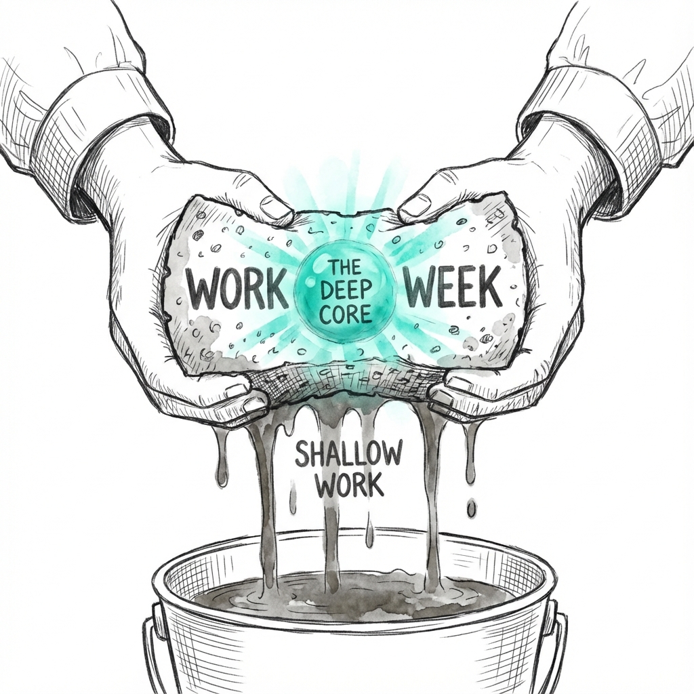
Shallow work is a reality of the modern office.You cannot avoid every meeting or ignore every email without losing your job. However, most knowledge workers underestimate how much of their day is consumed by these low-value tasks.
The software company Basecamp found that when they shortened their workweek to four days, their employees got the same amount of work done. By reducing the available time, the fat of the workweek was squeezed out.
People became stingy with their time and focused only on what mattered.
To thrive, you must adopt a similar ruthlessness.
You must treat shallow work with suspicion and manage it like a limited resource.
1. Schedule Every Minute
Most people spend their day on autopilot.
They react to whatever notification pops up or whoever walks into their office.
This is a recipe for a shallow life.
To take back control, you must schedule every minute of your day.
At the start of each morning, use a lined notebook to divide your day into blocks.
Assign every minute a job.
One block might be for a deep task like writing a report. Another might be a task block for handling five small emails.
This isn't about being a robot.
When your schedule is inevitably disrupted by a surprise meeting or a task taking longer than expected, simply pause and redraw the blocks for the remainder of the day.
The goal is not to follow the plan perfectly, but to maintain a thoughtful say in what you do with your time.
2. Quantify the Depth
Not all work is created equal. To help you prioritize, use this thought experiment to quantify the depth of any task:
How long would it take (in months) to train a smart recent college graduate with no specialized training in my field to complete this task? — Cal Newport
If the answer is a few weeks, the task is shallow. It doesn't leverage your expertise and it won't lead to a promotion.
If the answer is years, the task is deep. These are the activities that create real value and move your career forward.
Use this metric to identify which urgent tasks are actually trivial distractions.
3. Fixed-Schedule Productivity
One of the most powerful ways to limit shallow work is to adopt fixed-schedule productivity.
Set a firm limit on your workday. For example, a hard stop at 5:30 PM.
This artificial constraint forces you to be incredibly efficient.
When you know you only have a few hours left, you stop saying yes to unnecessary meetings and low-value requests. You become asymmetric in your culling. You protect the deep work at all costs and let the shallow work fall away.
4. Become Hard to Reach
Email is the quintessential shallow activity.
To regain your autonomy, you must change the social conventions surrounding your inbox.
- Sender Filters: Make people do more work to reach you. Add a note to your contact page explaining that you only respond to messages that align with your current projects. This resets expectations and reduces the volume of incoming junk.
- Process-Centric Email: Avoid back-and-forth volleys. Instead of asking "When should we meet?", suggest a process: "Here are three times I am free. If one works, I will consider the meeting confirmed."
- The Power of Non-Response: Develop the habit of not replying to ambiguous or uninteresting emails. As the author Tim Ferriss says, "Develop the habit of letting small bad things happen." The world will not end if you ignore a message that doesn't respect your time.
Conclusion
Carl Jung did not build his Tower in Bollingen because he wanted a vacation home.
He built it because he understood something that most of us have forgotten.
The world will not give you the conditions for great work.
You must create them yourself.
Jung's clinical practice was lucrative. The coffeehouse culture of Zurich was stimulating. But neither would produce the stream of original ideas he needed to challenge Freud and establish his own school of thought. For that, he needed to go deep. He needed a place where he could lock the door, chop his own wood, and think thoughts that had never been thought before.
The Tower was his answer.
You do not need a stone house in Switzerland. But you do need the same willingness to fight for your attention. The inbox will always beckon. The notifications will never stop. The culture of shallow busyness will always try to claim your hours.
The question is whether you will let it.
A deep life is not just a productive life. It is a meaningful one. When you spend your days in rapt attention on work that stretches you, you are not just producing value. You are experiencing the kind of flow that makes life feel rich.
Jung eventually expanded his Tower into a four-building complex. He spent decades retreating there, writing the books that would shape modern psychology. When he looked back on his life, it was not the Zurich dinner parties he remembered. It was the mornings at Bollingen, the silence, the depth.
The Tower is still waiting.
It is time to go to work.
Every week, one book gets this treatment — fully structured, nothing skipped. Find them all at longform.online